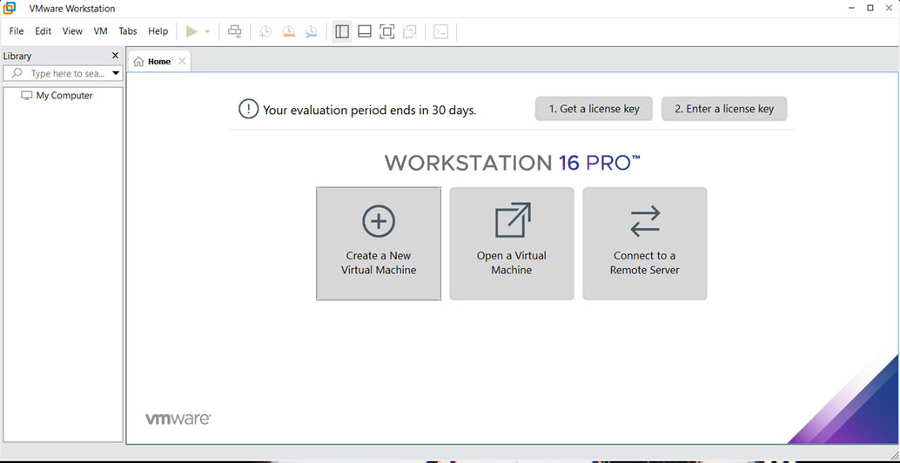

VMware Workstation
VMware Workstation - Программное обеспечение виртуализации, предназначенное для компьютеров x86-64 операционных систем Microsoft Windows и Linux. Позволяет пользователю установить одну или более виртуальных машин на один физический компьютер и запускать их параллельно с ним. Каждая виртуальная машина может выполнять свою операционную систему, включая Microsoft Windows, Linux, BSD, и MS-DOS. VMware Workstation разработана и продается компанией VMware, подразделением EMC Corporation

Преимуества Vmware Workstation
- Поскольку данная ВМ распространяется на платной основе, пользователю всегда предоставляется поддержка
- Более совершенная поддержка трехмерной графики, уровень стабильности 3D-акселерации выше, чем у конкурента VB
- Возможность создавать снимки через определенные промежутке времени – это повышает надежность работы с ВМ
- Объем виртуальных дисков может сжиматься для того, чтобы освободить свободное пространство для работы других систем.
- Больше возможностей при работе с виртуальной сетью
- Функция «связанные клоны» для ВМ
- Возможность записи работы ВМ в формате видео.
- Интеграция со средами разработки и тестирования, специальные возможности для программистов 256-битное шифрование для защиты ВМ
- К преимуществам программного комплекса относится, в первую очередь, простота установки и настройки. VMware Workstation устанавливается как обычная программа под Windows или Linux, для работы не требует перераспределения дискового пространства или других действий – выделение ресурсов происходит в автоматическом режиме. Софт, запущенный на виртуальной машине под управлением данного гипервизора, устанавливается и запускается без каких-либо проблем благодаря имитации физической рабочей станции с собственным оборудованием и ПО. Установка ОС на виртуальную машину также не отличается от того же процесса с использованием физического ПК.
- Еще одно важное преимущество – интуитивно понятный интерфейс, разобраться с которым сможет даже администратор, ранее не работавший с подобным ПО. Именно поэтому VMware часто называют гипервизором для новичков. Тем не менее, специальные инструменты позволяют реализовать даже самые продвинутые функции, свойственные более сложным гипервизорам.